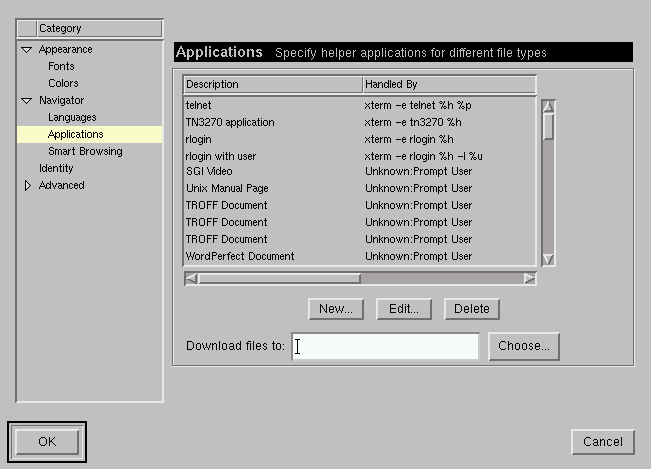
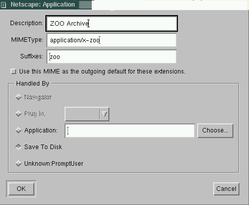

In some browsers you can use the right mouse button (or Shift-Button) to save links directly to a file. (Menu point `Save as'.)
If this is not possible, you will have to add a MIMEtype for ZOO files.
For example in netscape under Linux you have to select Edit -> Preferences -> Navigator -> Applications. You will get a window like this:

Select New. You get another window in which you specify that ``zoo'' files are to be saved to disk:

Close both windows with OK. Now loading the files should work.